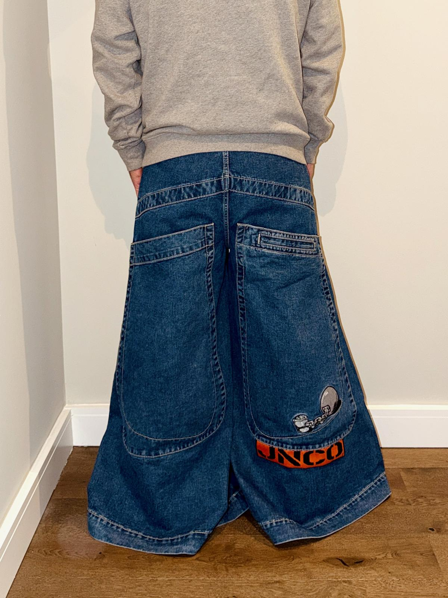
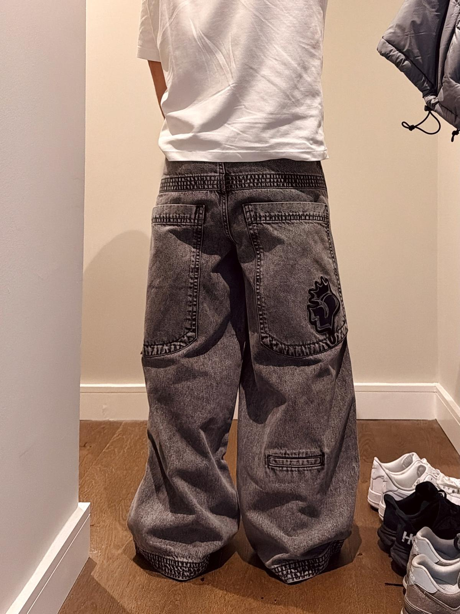

Over the last few months, I have started building something of a collection of JNCO jeans.
My fascination with these jeans goes back a long way. As someone who’s been around a while and has always liked baggy jeans, JNCOs are the unrivalled champion. Sadly, they weren’t imported to Sweden, where I grew up, but I browsed their site a lot, dreaming of what could have been.
Then, I completely forgot about JNCO until this year, when I saw a guy wearing some baggy jeans I really liked. They looked so much better than most modern baggy jeans. I looked closer - and realised they were JNCOs! 🤩
Later that evening, I found myself browsing their website, excited that the brand has made a comeback and is staying true to the originals.
A couple of weeks after seeing that guy in his JNCOs, I finally hit the “proceed to checkout” button and ordered my first pair, the same Twin Canon as that guy wore.
The idea was to just get the one pair. I even wrote in a blog post when I bought them that the 34” Rhinos or 50” Convicts were an itch probably best left unscratched.
But then I noticed how great I felt wearing them, and I started wondering what the bigger models would feel like. Maybe just another pair? And another?
And thus, my collection had started.
My JNCOs so far
All in all, I have 4 pairs of JNCOs so far, spanning from 26” all the way to 50”.
JNCO 101 Twin Cannon in dark stone (26” leg opening)
My first pair. With 26” leg openings, they are only slightly bigger than normal baggy jeans, and easy to wear.

Read more about my Twin Cannons
JNCO Rhino in dark stone (34” leg opening)
Loving the Twin Cannon, I wanted to go bigger, so I went for these with their 34” leg openings. They claim to be collector’s editions in the Endangered Species series.

JNCO Convict in dark stone (50” leg opening)
These collector’s editions are the ultimate JNCOs, if you ask me. Their 50” leg openings are absolutely bonkers! But they feel amazing, albeit slightly cumbersome.

JNCO Jester in vintage black (26” leg opening)
These have become my go-tos for everyday wear. 26” leg openings make them the same fit as the Twin Cannon, but they’re a nice break from my normal blue, and I like the details better.

What’s next on my list?
I think I will buy the Mammoths next. I love the huge pockets, and at 40”, they fit nicely between the 34” Rhinos and the 50” Convicts I already have. With three blue pairs already, I’m leaning toward the jet-black colourway.